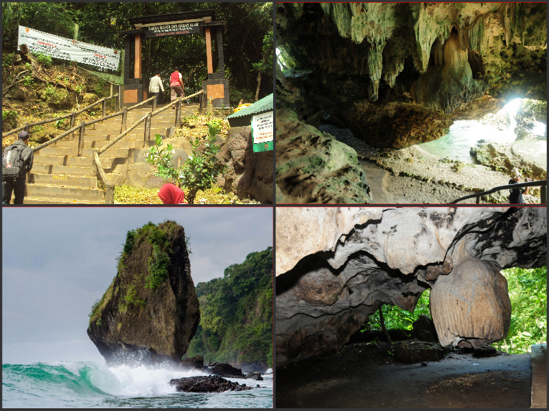

Pantai Pangandaran merupakan sebuah objek wisata andalan Kabupaten Pangandaran (pemekaran dari Kabupaten Ciamis) yang terletak di sebelah tenggara Jawa Barat, tepatnya di Desa Pangandaran, Kecamatan Pangandaran, Kabupaten Pangandaran, Provinsi Jawa Barat.
Goa di Cagar Alam

Goa di cagar alam
Salah satu goa yang berada di cagar alam Pangandaran adalah Goa Parat (goa Keramat).Goa ini cukup panjang sekitar 200 meter dan tembus kepantai, dikatakan goa parat karena dalam bahasa sunda parat itu artinya tembus, konon ceritanya goa ini merupakan patilasan penyebar agama Islam di masa kerajaan pananjung ( Galuh pangauban ) yang bernama Syeh Ahmad ( Pangeran kasepuhan ) dan Syeh Muhamad ( Pangeran Kanoman )
Keunikan keunikannya yaitu :
Batu Stalagtit yang mirip seperti kelamin laki - laki dan perempuan, Batu Stalagtit yang mirip seperti paha ayam, Batu Stalagmit yang mirip seperti hewan unta, Batu cikaracak, hewan landak dan kelalawar.